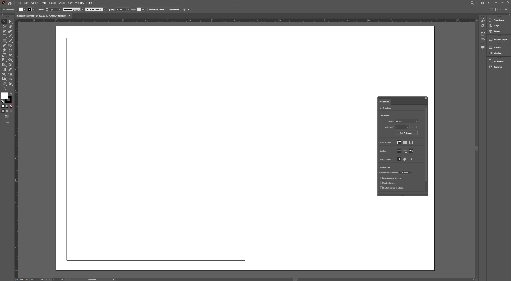
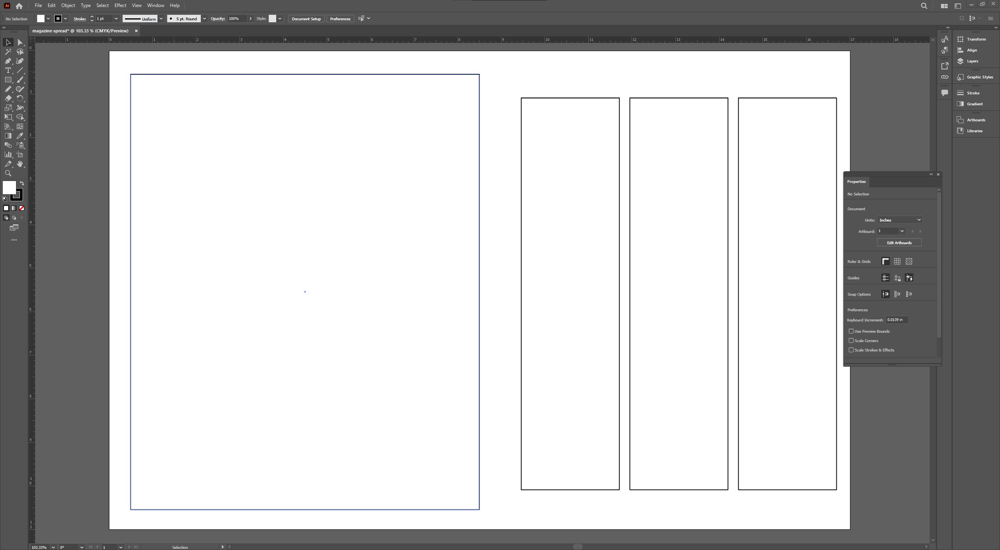
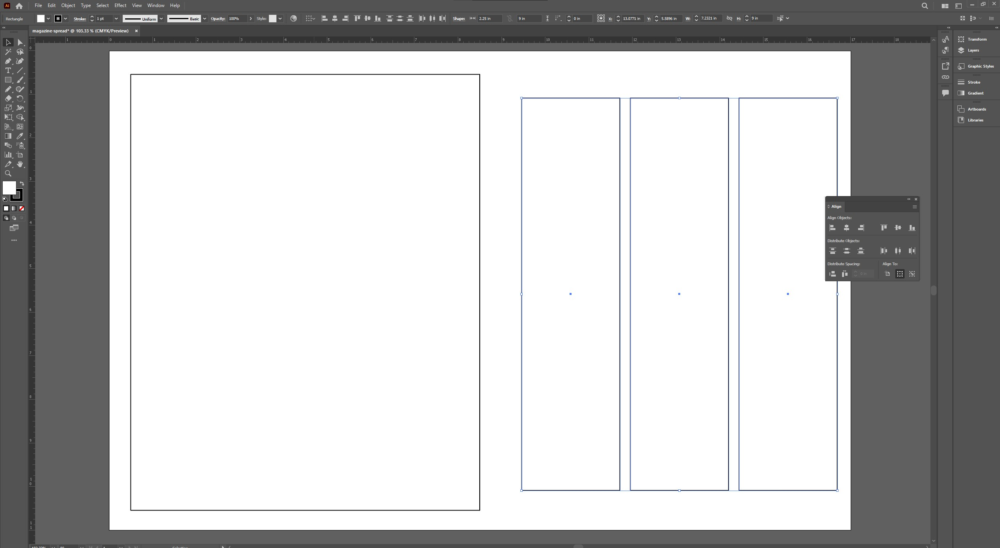
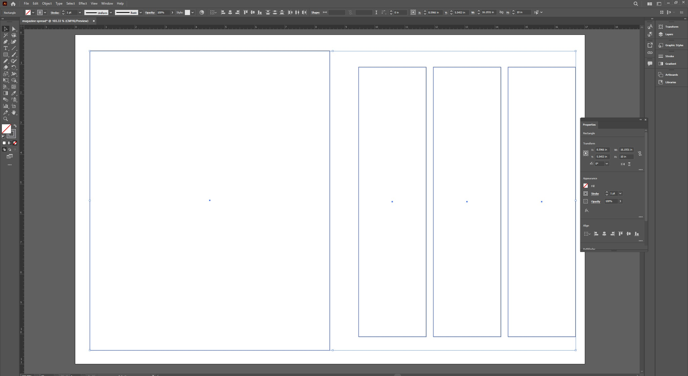

Using the Shape Tools
Why This Matters
Shapes are the foundation of your layout. In Illustrator, you’ll use them to block out sections for images, headlines, columns of text, and design elements. Right now, we’re going to sketch out the basic structure of the magazine spread. Think of this step like laying down the scaffolding for a building.
Step 1: Draw a Rectangle to Represent a Photo Section
Select the Rectangle Tool (M) from the toolbar on the left. Click and drag across the left half of your artboard to make a large photo placeholder. This will act as a feature image on the left-hand page of the spread.
Once it’s drawn, look at the Properties panel on the right. You can adjust the size exactly by typing in dimensions. Try setting it to 8 by 10 inches if you want a big bold image area.
Rectangle shape covering half of the artboard with dimensions showing in the Properties panel.
Step 2: Create Columns for Text
Use the Rectangle Tool again to draw three smaller boxes on the right page. These will be your text columns. Give them each a height of around 9 inches and a width of about 2.25 inches. Leave a little space between them to keep things readable.
Don’t worry about making them perfect. You can always tweak the alignment in the next step.
Three evenly spaced narrow rectangles on the right half of the artboard.
Step 3: Align and Distribute Your Layout
Hold Shift and click all three text boxes to select them. Open the Align panel (Window > Align if it’s not already showing). Use the “Horizontal Distribute” option to space them out evenly. Then use “Align Top” so they line up neatly.
This tool makes it super easy to keep everything symmetrical and balanced.
Align panel open with all three text boxes selected and aligned.
Step 4: Customize the Fill and Stroke
Right now all your boxes probably have a white fill and a black border. Let’s clean that up. Click on each one and remove the fill color, then set the stroke to a light gray. This will help you see the layout without distracting you later when you add images and text.
Properties panel showing fill removed and stroke set to light gray.
Next Steps
Your layout is taking shape. Next, we’ll learn how to move and adjust everything more precisely using the selection tools. That’s where the real control comes in.